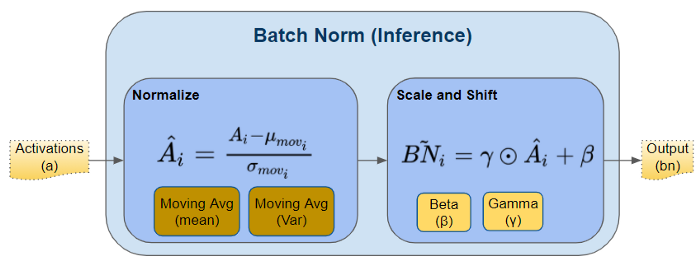
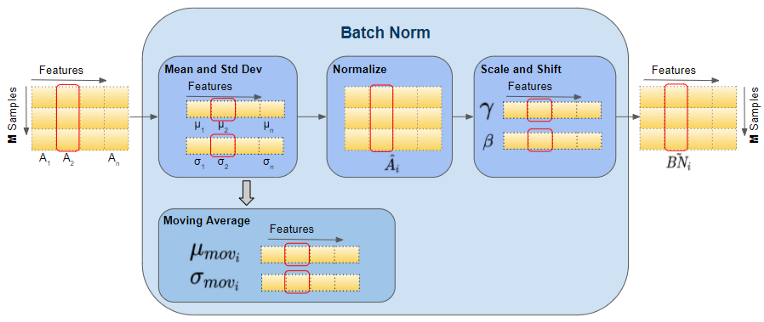

In [1]:
from IPython.core.interactiveshell import InteractiveShell
InteractiveShell.ast_node_interactivity = "last_expr_or_assign"
import torch
import torch.nn as nn
Formula¶

Test¶

BatchNorm1d Illustration¶
In [2]:
N, D = 3, 5
input1d = torch.arange(N * D).reshape(N, D).float()
Out[2]:
tensor([[ 0., 1., 2., 3., 4.],
[ 5., 6., 7., 8., 9.],
[10., 11., 12., 13., 14.]])
In [3]:
bn1d = nn.BatchNorm1d(D)
Out[3]:
BatchNorm1d(5, eps=1e-05, momentum=0.1, affine=True, track_running_stats=True)
In [4]:
bn1d.state_dict()
Out[4]:
OrderedDict([('weight', tensor([1., 1., 1., 1., 1.])),
('bias', tensor([0., 0., 0., 0., 0.])),
('running_mean', tensor([0., 0., 0., 0., 0.])),
('running_var', tensor([1., 1., 1., 1., 1.])),
('num_batches_tracked', tensor(0))])
In [5]:
vars(bn1d)
Out[5]:
{'training': True,
'_parameters': OrderedDict([('weight', Parameter containing:
tensor([1., 1., 1., 1., 1.], requires_grad=True)),
('bias',
Parameter containing:
tensor([0., 0., 0., 0., 0.], requires_grad=True))]),
'_buffers': OrderedDict([('running_mean', tensor([0., 0., 0., 0., 0.])),
('running_var', tensor([1., 1., 1., 1., 1.])),
('num_batches_tracked', tensor(0))]),
'_non_persistent_buffers_set': set(),
'_backward_hooks': OrderedDict(),
'_is_full_backward_hook': None,
'_forward_hooks': OrderedDict(),
'_forward_pre_hooks': OrderedDict(),
'_state_dict_hooks': OrderedDict(),
'_load_state_dict_pre_hooks': OrderedDict(),
'_modules': OrderedDict(),
'num_features': 5,
'eps': 1e-05,
'momentum': 0.1,
'affine': True,
'track_running_stats': True}
In [6]:
output1d = bn1d(input1d)
Out[6]:
tensor([[-1.2247, -1.2247, -1.2247, -1.2247, -1.2247],
[ 0.0000, 0.0000, 0.0000, 0.0000, 0.0000],
[ 1.2247, 1.2247, 1.2247, 1.2247, 1.2247]],
grad_fn=<NativeBatchNormBackward>)
In [7]:
bn1d.state_dict()
Out[7]:
OrderedDict([('weight', tensor([1., 1., 1., 1., 1.])),
('bias', tensor([0., 0., 0., 0., 0.])),
('running_mean',
tensor([0.5000, 0.6000, 0.7000, 0.8000, 0.9000])),
('running_var', tensor([3.4000, 3.4000, 3.4000, 3.4000, 3.4000])),
('num_batches_tracked', tensor(1))])
In [8]:
m = torch.Tensor.mean(input1d, 0)
Out[8]:
tensor([5., 6., 7., 8., 9.])
In [9]:
v = torch.Tensor.var(input1d, 0, False)
Out[9]:
tensor([16.6667, 16.6667, 16.6667, 16.6667, 16.6667])
In [10]:
(input1d - m) / torch.sqrt(v)
Out[10]:
tensor([[-1.2247, -1.2247, -1.2247, -1.2247, -1.2247],
[ 0.0000, 0.0000, 0.0000, 0.0000, 0.0000],
[ 1.2247, 1.2247, 1.2247, 1.2247, 1.2247]])
Momentum¶
- running_mean = momentum running_mean + (1-momentum) sample_mean
- running_var = momentum running_var + (1-momentum) sample_var
In [11]:
bn1d_m1 = nn.BatchNorm1d(D, momentum=1)
Out[11]:
BatchNorm1d(5, eps=1e-05, momentum=1, affine=True, track_running_stats=True)
In [12]:
bn1d_m1(input1d)
Out[12]:
tensor([[-1.2247, -1.2247, -1.2247, -1.2247, -1.2247],
[ 0.0000, 0.0000, 0.0000, 0.0000, 0.0000],
[ 1.2247, 1.2247, 1.2247, 1.2247, 1.2247]],
grad_fn=<NativeBatchNormBackward>)
In [13]:
bn1d_m1.state_dict()
Out[13]:
OrderedDict([('weight', tensor([1., 1., 1., 1., 1.])),
('bias', tensor([0., 0., 0., 0., 0.])),
('running_mean', tensor([5., 6., 7., 8., 9.])),
('running_var', tensor([25., 25., 25., 25., 25.])),
('num_batches_tracked', tensor(1))])
In [14]:
v = torch.Tensor.var(input1d, 0, True)
Out[14]:
tensor([25., 25., 25., 25., 25.])
In [15]:
bn1d_m_half = nn.BatchNorm1d(D, momentum=0.5)
Out[15]:
BatchNorm1d(5, eps=1e-05, momentum=0.5, affine=True, track_running_stats=True)
In [16]:
bn1d_m_half(input1d)
Out[16]:
tensor([[-1.2247, -1.2247, -1.2247, -1.2247, -1.2247],
[ 0.0000, 0.0000, 0.0000, 0.0000, 0.0000],
[ 1.2247, 1.2247, 1.2247, 1.2247, 1.2247]],
grad_fn=<NativeBatchNormBackward>)
In [17]:
bn1d_m_half.state_dict()
Out[17]:
OrderedDict([('weight', tensor([1., 1., 1., 1., 1.])),
('bias', tensor([0., 0., 0., 0., 0.])),
('running_mean',
tensor([2.5000, 3.0000, 3.5000, 4.0000, 4.5000])),
('running_var', tensor([13., 13., 13., 13., 13.])),
('num_batches_tracked', tensor(1))])
In [18]:
input1d_2 = torch.arange(0, 2 * N * D, 2).reshape(N, D).float()
Out[18]:
tensor([[ 0., 2., 4., 6., 8.],
[10., 12., 14., 16., 18.],
[20., 22., 24., 26., 28.]])
In [19]:
bn1d_m_half(input1d_2)
Out[19]:
tensor([[-1.2247, -1.2247, -1.2247, -1.2247, -1.2247],
[ 0.0000, 0.0000, 0.0000, 0.0000, 0.0000],
[ 1.2247, 1.2247, 1.2247, 1.2247, 1.2247]],
grad_fn=<NativeBatchNormBackward>)
In [20]:
bn1d_m_half.state_dict()
Out[20]:
OrderedDict([('weight', tensor([1., 1., 1., 1., 1.])),
('bias', tensor([0., 0., 0., 0., 0.])),
('running_mean',
tensor([ 6.2500, 7.5000, 8.7500, 10.0000, 11.2500])),
('running_var',
tensor([56.5000, 56.5000, 56.5000, 56.5000, 56.5000])),
('num_batches_tracked', tensor(2))])
In [21]:
torch.Tensor.var(input1d_2, 0, True)
Out[21]:
tensor([100., 100., 100., 100., 100.])
In [22]:
13*0.5 + 100*0.5
Out[22]:
56.5
Affine: Weight & Bias¶
In [23]:
output1d
Out[23]:
tensor([[-1.2247, -1.2247, -1.2247, -1.2247, -1.2247],
[ 0.0000, 0.0000, 0.0000, 0.0000, 0.0000],
[ 1.2247, 1.2247, 1.2247, 1.2247, 1.2247]],
grad_fn=<NativeBatchNormBackward>)
In [24]:
output1d.sum().backward()
In [25]:
bn1d.weight.grad
Out[25]:
tensor([0., 0., 0., 0., 0.])
In [26]:
bn1d.bias.grad
Out[26]:
tensor([3., 3., 3., 3., 3.])
In [27]:
bn1d.parameters()
Out[27]:
<generator object Module.parameters at 0x0000024FF147D430>
In [28]:
optimizer = torch.optim.RMSprop(bn1d.parameters(), lr=0.01)
Out[28]:
RMSprop (
Parameter Group 0
alpha: 0.99
centered: False
eps: 1e-08
lr: 0.01
momentum: 0
weight_decay: 0
)
In [29]:
optimizer.step()
In [30]:
bn1d.bias
Out[30]:
Parameter containing: tensor([-0.1000, -0.1000, -0.1000, -0.1000, -0.1000], requires_grad=True)
Shape¶

BatchNorm2d Illustration¶
In [31]:
N, C, H, W = 3, 2, 4, 5
In [32]:
input2d = torch.arange(N * C * H * W).reshape(N, C, H, W).float()
Out[32]:
tensor([[[[ 0., 1., 2., 3., 4.],
[ 5., 6., 7., 8., 9.],
[ 10., 11., 12., 13., 14.],
[ 15., 16., 17., 18., 19.]],
[[ 20., 21., 22., 23., 24.],
[ 25., 26., 27., 28., 29.],
[ 30., 31., 32., 33., 34.],
[ 35., 36., 37., 38., 39.]]],
[[[ 40., 41., 42., 43., 44.],
[ 45., 46., 47., 48., 49.],
[ 50., 51., 52., 53., 54.],
[ 55., 56., 57., 58., 59.]],
[[ 60., 61., 62., 63., 64.],
[ 65., 66., 67., 68., 69.],
[ 70., 71., 72., 73., 74.],
[ 75., 76., 77., 78., 79.]]],
[[[ 80., 81., 82., 83., 84.],
[ 85., 86., 87., 88., 89.],
[ 90., 91., 92., 93., 94.],
[ 95., 96., 97., 98., 99.]],
[[100., 101., 102., 103., 104.],
[105., 106., 107., 108., 109.],
[110., 111., 112., 113., 114.],
[115., 116., 117., 118., 119.]]]])
In [33]:
bn2d = nn.BatchNorm2d(C)
Out[33]:
BatchNorm2d(2, eps=1e-05, momentum=0.1, affine=True, track_running_stats=True)
In [34]:
bn2d.state_dict()
Out[34]:
OrderedDict([('weight', tensor([1., 1.])),
('bias', tensor([0., 0.])),
('running_mean', tensor([0., 0.])),
('running_var', tensor([1., 1.])),
('num_batches_tracked', tensor(0))])
In [35]:
output2d = bn2d(input2d)
Out[35]:
tensor([[[[-1.4925, -1.4624, -1.4322, -1.4021, -1.3719],
[-1.3418, -1.3116, -1.2815, -1.2513, -1.2212],
[-1.1910, -1.1609, -1.1307, -1.1006, -1.0704],
[-1.0403, -1.0101, -0.9799, -0.9498, -0.9196]],
[[-1.4925, -1.4624, -1.4322, -1.4021, -1.3719],
[-1.3418, -1.3116, -1.2815, -1.2513, -1.2212],
[-1.1910, -1.1609, -1.1307, -1.1006, -1.0704],
[-1.0403, -1.0101, -0.9799, -0.9498, -0.9196]]],
[[[-0.2864, -0.2563, -0.2261, -0.1960, -0.1658],
[-0.1357, -0.1055, -0.0754, -0.0452, -0.0151],
[ 0.0151, 0.0452, 0.0754, 0.1055, 0.1357],
[ 0.1658, 0.1960, 0.2261, 0.2563, 0.2864]],
[[-0.2864, -0.2563, -0.2261, -0.1960, -0.1658],
[-0.1357, -0.1055, -0.0754, -0.0452, -0.0151],
[ 0.0151, 0.0452, 0.0754, 0.1055, 0.1357],
[ 0.1658, 0.1960, 0.2261, 0.2563, 0.2864]]],
[[[ 0.9196, 0.9498, 0.9799, 1.0101, 1.0403],
[ 1.0704, 1.1006, 1.1307, 1.1609, 1.1910],
[ 1.2212, 1.2513, 1.2815, 1.3116, 1.3418],
[ 1.3719, 1.4021, 1.4322, 1.4624, 1.4925]],
[[ 0.9196, 0.9498, 0.9799, 1.0101, 1.0403],
[ 1.0704, 1.1006, 1.1307, 1.1609, 1.1910],
[ 1.2212, 1.2513, 1.2815, 1.3116, 1.3418],
[ 1.3719, 1.4021, 1.4322, 1.4624, 1.4925]]]],
grad_fn=<NativeBatchNormBackward>)
In [36]:
bn2d.state_dict()
Out[36]:
OrderedDict([('weight', tensor([1., 1.])),
('bias', tensor([0., 0.])),
('running_mean', tensor([4.9500, 6.9500])),
('running_var', tensor([112.7559, 112.7559])),
('num_batches_tracked', tensor(1))])
In [ ]:
评论
shortnamefor Disqus. Please set it in_config.yml.